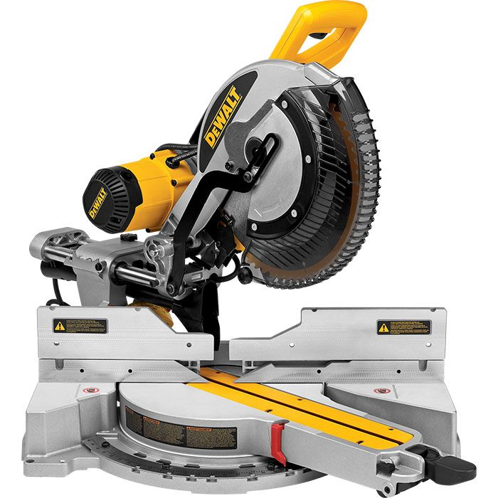

Mitre Saw

The purpose of the mitre saw is to CUT ACROSS MATERIAL TO LENGTH
1) Eye protection must be worn while operating the Mitre Saw.
2) Always use your right hand on the TRIGGER when cutting wood on the Mitre Saw.
3) NEVER place your hands near the saw blade, whether the saw is running or stopped. DO NOT cross your arms when cutting on the Mitre Saw or reaching for material.
4) When cutting, keep one hand on the handle and the other hand off the table.
5) Always push the saw AWAY from you when you are slide cutting.
6) Cut SLOWLY, especially on wide or thick pieces. Fast cuts leave a POOR finish and can jam the blade.
7) ALWAYS check a 90-degree cut with a Square before your final cut.
8) The Mitre Saw is for CROSSCUTTING only.
9) Use a "stop" when cutting several pieces the same length.
10) Keep the saw and work area clear of extra wood, chips, sawdust and tools for safe and accurate work. Throw all trimmings from the Mitre Saw in the garbage can, and clean the machine after you have finished.
11) Always secure the wood against the fence with your hand or a clamp if it is a small piece and in the NO HANDS ZONE.
12) If the wood is warped, the BOW goes up the CUP goes down.